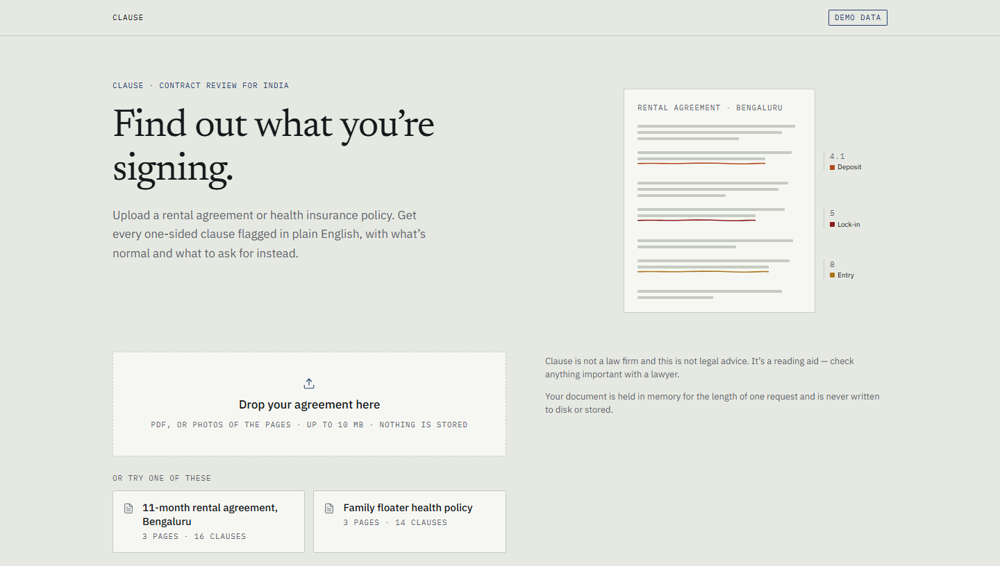
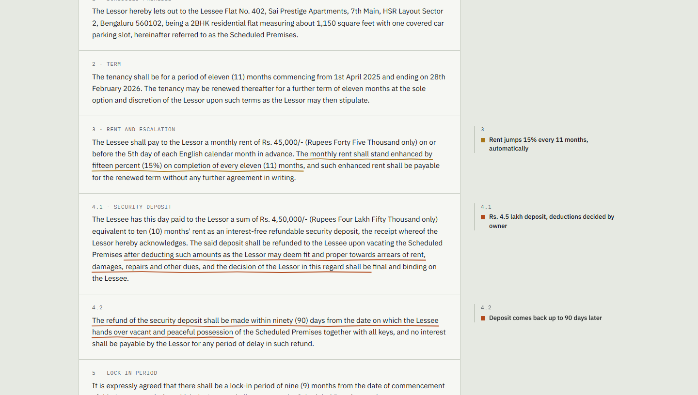
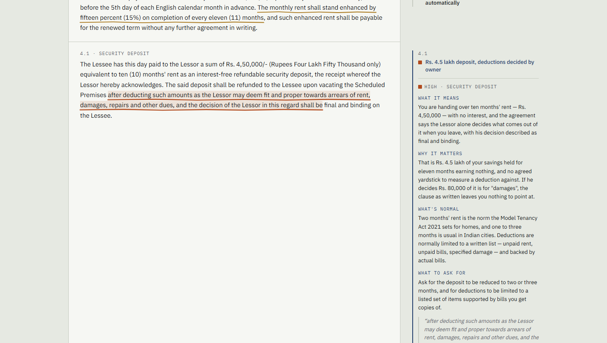
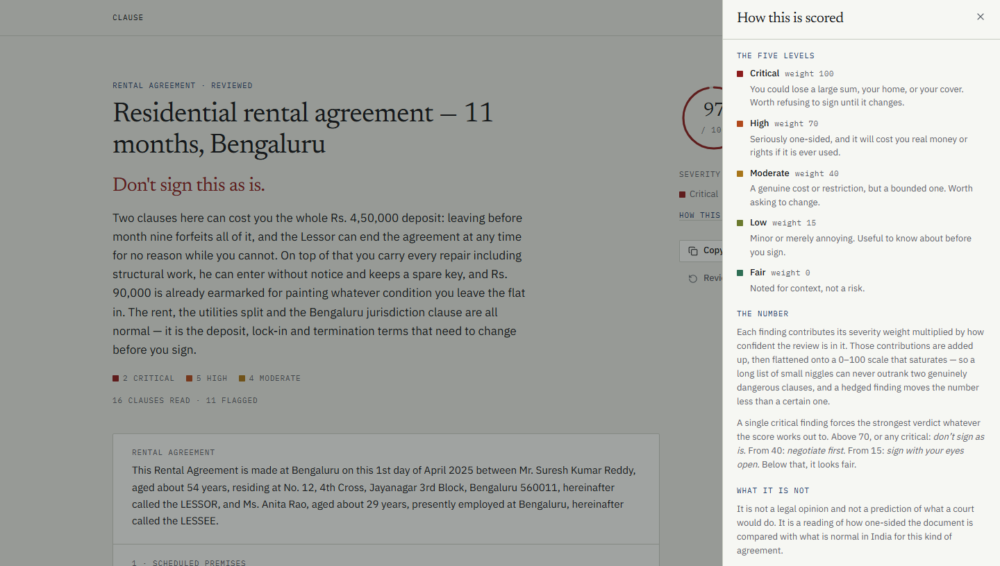
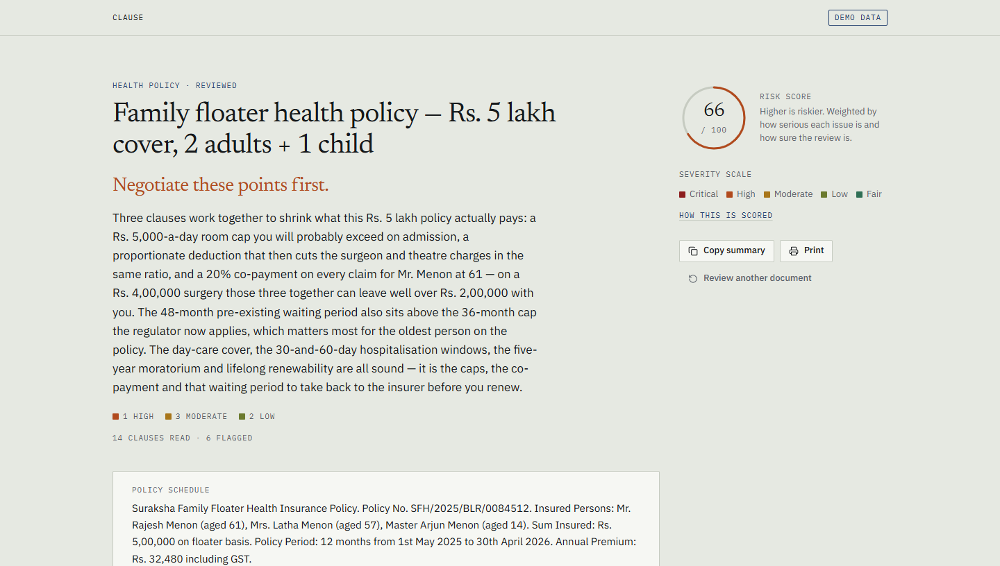
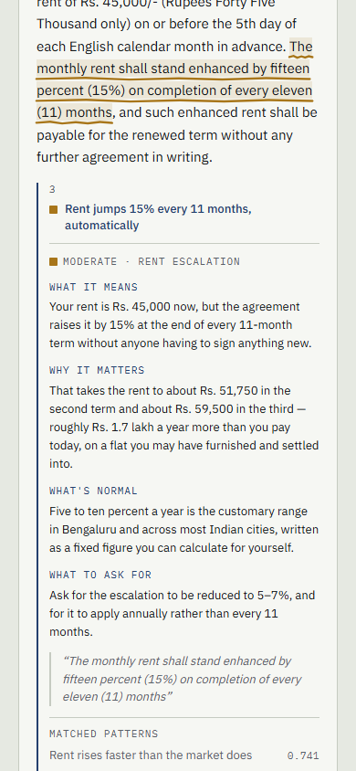

Upload or try a sample
A PDF or phone photos, and nothing is stored.
Case study · AI web app
Find out what you're signing. Upload a rental agreement or health policy and get every one-sided clause flagged, in plain English.

A finished report. The sample documents are fictional.
The 30-second version
Upload a rental agreement or health policy and get your own document back, marked up: risky clauses flagged, explained and paired with what to ask for instead. Findings stream in live from a six-stage LLM pipeline.
The problem
In India, people sign rental agreements and health policies full of one-sided terms: huge deposits, lock-ins that forfeit them, caps that shrink what a policy pays.
What I built

A PDF or phone photos, and nothing is stored.

Findings stream in one by one, underlining the exact words in the clause.

What it means, why it matters, what's normal, and what to ask for instead.

A verdict and a 0–100 risk score computed by a visible formula, not the model's opinion.

Rental agreements and health policies, with 17 risk patterns each.

Flags sit under their clause, and it works by keyboard and screen reader.
How it's built
No database and no separate backend. One Next.js route takes the upload and streams results back line by line.
Read
PDF text, or OCR for photos
Classify
Rental or health policy
Segment
Split into clauses
Retrieve
Match risk patterns
Analyse
gpt-4o, in parallel batches
Compile
Score, verdict, summary
Shared types
Server and browser share one event contract.
CSS layout
Flags line up with clauses using subgrid, no JS.
Demo mode
Without an API key, it replays sample reports.
The hard parts
01
Every quote is matched back to the document, and only the original text is shown. If it isn't found, nothing is shown.
02
When API credits ran out, every batch failed and the report said "looks fair". Now that's an error, and partial reports say so.
03
On a fair document, the model flagged things as "fair". A negative example in the prompt brought that to zero findings.
How I worked
What I learned
What's next
I'm looking for a full-time job (CDI) in software or AI engineering.